Headrest padding: what to buy, how to make it, what it looks like
All options use the same F3 shell (without the slits, with 8 round dot pockets), the same printed template part and the same Velcro dots. Only the foam changes. The links are AliExpress listings found on 2026-11-15; check the variant and current price before ordering.
Shared kit (every option uses it, buy once)
| Item | Link | Why |
|---|---|---|
| Velcro dots, Ø25 mm, black: pre-cut peel-and-stick pairs (hook + loop) | 25 mm, 100 pairs · alt: 30 mm, 100 pairs | 8 pairs per headrest. Hook dot into each round pocket in the shell, loop dot on the foam. No cutting, removable for washing. |
| Hollow punch set 2.5–10 mm | 9-piece 2.5–10 mm | Ø9 for the screwdriver holes, Ø7 for the strap-slot ends. Clean round holes, no tearing. |
| Snap-off knife + 18 mm SK5 blades | 18 mm SK5 blades (search) | A fresh tip for every pad. Blunt blades tear EVA. |
| Heat gun with variable temperature | 2000 W variable | Rounds and seals the cut edge, and forms the roll behind the neck. Choose the plug and voltage for your outlets. |
| Template part (print it) | addons/headrest/PAD_buy/foam_template_part.stl · paper backup: foam_template_A4.pdf | 2.4 mm plate, 237 × 108 mm. On the P1S: about 1.25 h, 44 g PETG (3 walls, 15%). Trace round it, punch through it, mark the dot centres. |
Also: isopropyl alcohol and a silver or white pen. Prices on AliExpress move daily, and these listings were found today. Always check the variant (thickness and width) before paying.
The template part
- Outline: the exact flat shape of the lining, laid out from the 3D shell. Trace round it.
- 2 strap slots: trace inside them. Punch Ø7 at each end and cut between.
- 2 punch guides Ø9.7: push the Ø9 punch straight through the template into the foam. That gives the screwdriver holes in exactly the right place, no measuring.
- 8 dot marks: a Ø4 hole marks each dot centre, with the Ø25 dot outline engraved round it.
- Centre notches top and bottom, and an arrow = top of the head.
- Lay the template on the foam (on the side that will face the shell), with the arrow up.
- Trace the outline and the slots with a silver pen, and dot through the 8 marks.
- Punch the 2 holes through the guides, with the template still in place.
- Remove the template and cut along the line.
Symmetric, so it can't be used the wrong way round. One template part lasts for any number of pads.
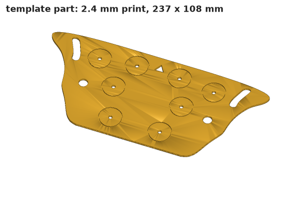
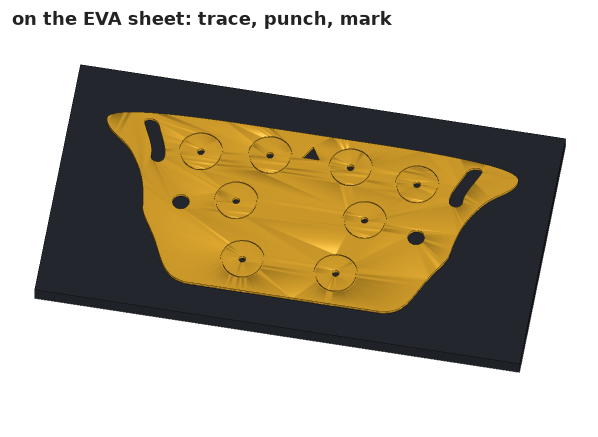
The shell side: 8 round pockets
The F3 shell loses its 5 back slits and gets 8 round pockets, Ø26 × 1.5 mm, inside. Each hook dot drops into its pocket, so it can't be placed wrong. Press a loop dot onto every hook dot, peel the liners, press the foam in: every loop dot lands on its pencil mark.
In the model the dots don't clash with the shell or the foam. The 10 mm foam leaves 2.6 mm to the 5-year-old head and 3.3 mm to the 2-year-old. The back is clean.
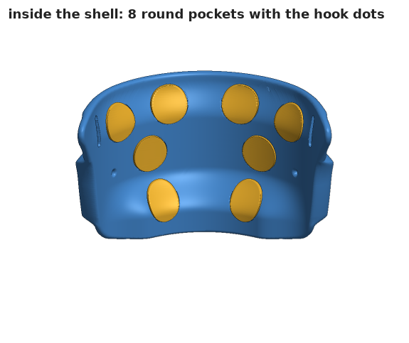
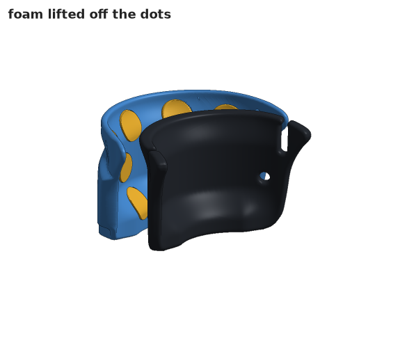
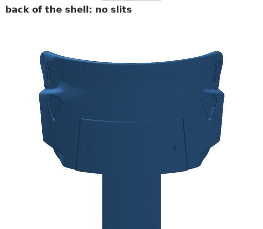
1. High-density EVA sheet, 10 mm POC pick
closed cell: wipes cleanfirm-mediumabout $3–15 a sheet≈12 pads per 35×100 cm sheet
- Lay the template part on the sheet, trace it, dot the 8 marks, and punch the 2 holes through the guides.
- Cut with a fresh blade held upright, 2–3 light passes. Cut the outline. Punch Ø7 at the strap-slot ends and cut between.
- Heat-gun the head-side edge (about 10 cm away, keep it moving) until it rounds and shines.
- Bend it into the shell cold. Warm only the bottom roll, then hold it over a ball for about 30 s.
- Hook dots into the 8 pockets (alcohol wipe first, 24 h to set). Loop dots onto the hooks, peel, press the foam in, lined up with the marks.
Sellers rarely state the density, and "high density" is a marketing word. Ask for about 85 kg/m³, or check that reviews call it stiff, not squishy.
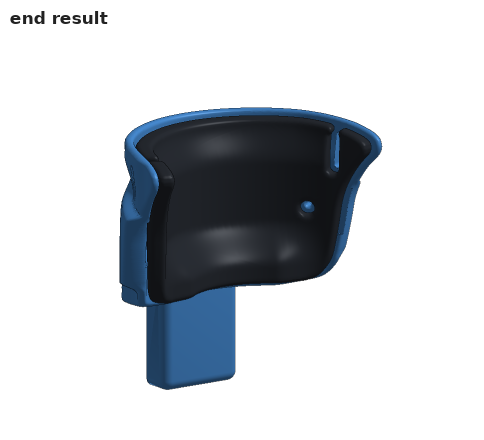
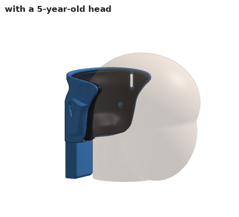
2. EVA play / puzzle mat (often already at home)
closed cellsofter1 tile ≈ 1 padfree if you have one
- Use a plain tile at least 30 × 30 cm, and keep the interlocking edge out of the pattern.
- Same cutting, punching and edge sealing as option 1.
- The textured face goes toward the head (grippy) or toward the shell (smoother look). Try both.
- Same Velcro dots.
Good for a free first fit. Lower density means it squashes more. Choose 12 mm tiles if you can get them, and check the listing's EN71 / ASTM F963 claims with the seller.
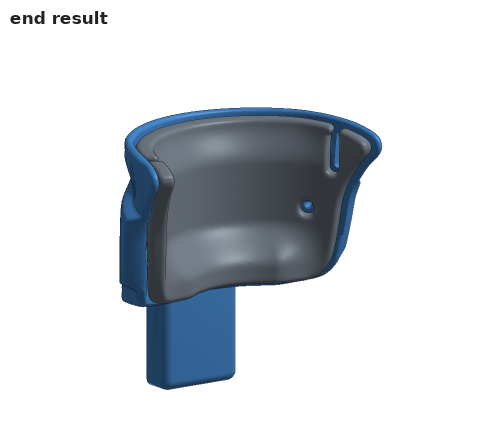
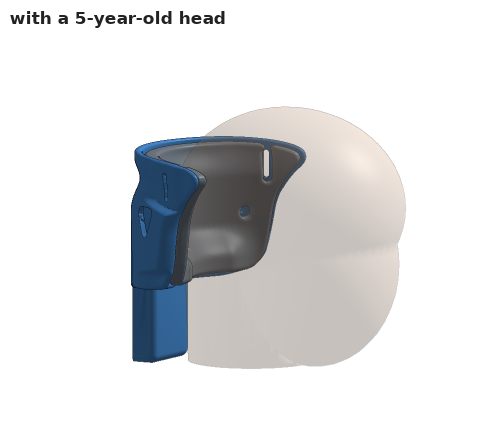
3. XPE closed-cell polyethylene, 10 mm (Plastazote-like)
closed cell: washablemediumthe orthotic-style materialdensity must be checked
- Same template, knife and punches.
- Heat-forms well: warm it, then press into shape over a ball (not hot against the PETG shell).
- Same Velcro dots.
I found no AliExpress listing I would trust as real Plastazote. Ask the seller for "XPE / IXPE cross-linked", not EPE packing foam, and 30–45 kg/m³. This is the best material for the real product; the real Plastazote comes from orthotic suppliers.
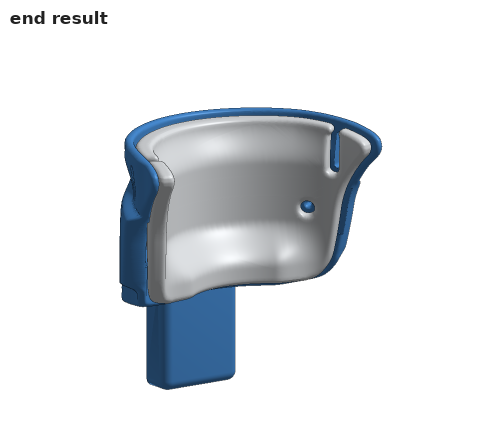
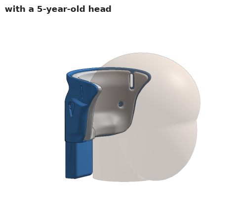
4. Soft PU sponge 10 mm + stretch Lycra cover
softestwashable coverneeds sewing+ looks upholstered
- Cut the sponge from the template (scissors are fine).
- Cut the Lycra 15 mm bigger all round. Sew or glue a pocket so it closes on the BACK, with an elastic edge or a zip.
- Stick the loop dots onto the cover's back, then use the same hook dots.
- Wash the cover; replace the sponge when it flattens.
The most comfortable, but open-cell sponge soaks up sweat, so the cover isn't optional. More work per pad. I'd keep this for a child who finds EVA too hard.
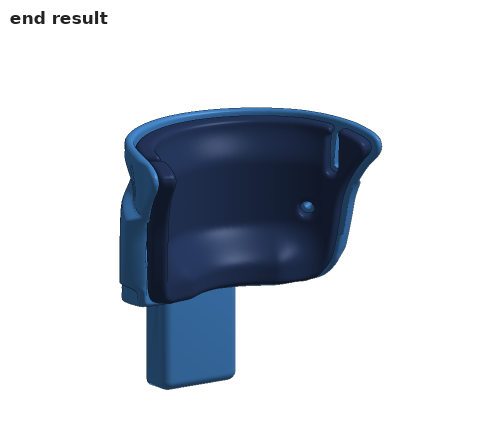
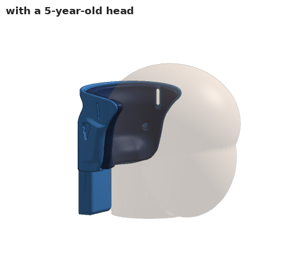
5. Printed TPU 95A cushion (no cutting)
exact fittunable softnesswipe the skinneeds TPU tuning
- I export the cushion as an STL (the same shape as the foam).
- Print on the P1S: 95A, slow (about 25–40 mm/s), gyroid infill about 8%, 2 top layers on the head side, no supports.
- Stick the loop dots on, then use the same hook dots.
No cutting, and identical for every child. The research says low gyroid infill is comfortable, but there's no tested headrest recipe, so it needs 2–3 test prints to tune. A good next step after the EVA proof of concept.
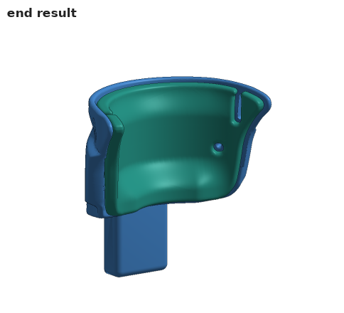
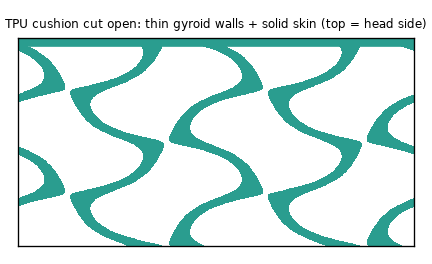
Self-adhesive EVA (sticker on the back): where it fits
Where to buy: peel-and-stick EVA is common in 1–6 mm and rare at 10 mm. I couldn't pin down a reliable product link, so these are search pages: adhesive EVA foam · adhesive craft foam sheets (a 6-pack of 5 mm A4 black sheets showed up here) · adhesive closed-cell roll, 5/10/15/20 mm, kraft liner. Check that the listing says self-adhesive, closed-cell EVA, and the thickness.
| How to use it | Removable? | Verdict |
|---|---|---|
| a. As a fit layer on top of foam 1 or 2: a 3–5 mm adhesive layer stuck to the base foam, either all over (10 + 5 = 15 mm for a small head) or as spot pads (a bit more under the back of the head or at the temples). The base still attaches with the Velcro dots. | yes (with the base) | Best use. The therapist can fine-tune the fit for each child without new prints. |
| b. Sticker side onto the loop dots: keep the liner on, cut out only the 8 Ø25 circles at the template's dot marks, and stick a loop dot in each. | yes | Works with the same shell and dots. Slightly fiddly. |
| c. Stuck straight into the shell | no (peel, then clean with alcohol) | Simplest, but you can't take it out to wash it or tune the thickness. Only for a quick test. |
Other ways the foam could attach to the shell
| Connection points | Look | Notes |
|---|---|---|
| 8 Velcro dots in round pockets (current) | invisible | Any foam, removable, about $0.05 per dot. Recommended. |
| Tuck lip: a 2 mm overhang round the shell's inner rim that the foam edge slips under | very clean, no adhesive | Holds the edges only, so the middle can lift. It also needs an undercut in the print, so supports or a different print angle. A possible extra later, together with the dots. |
| Adhesive dots only (no Velcro) | invisible | Cheap, but not removable. |
| Magnets in the shell plus steel discs in the foam | invisible | No: a loose magnet is a swallowing hazard for small children. |
| Printed pegs pushed through the foam | the pegs show on the head side | No: hard points against the head. |
Quick comparison
| Cost per pad | Work per pad | Feel | Cleaning | Best for | |
|---|---|---|---|---|---|
| 1 EVA sheet | $1–2 | about 20 min | firm-medium | wipe | POC, most kids |
| 2 Play mat | $0–2 | about 20 min | softer | wipe | free first fit |
| 3 XPE | $1–3 | about 25 min | medium | wash | the real product |
| 4 Sponge + Lycra | $3–5 | about 60 min (sewing) | soft | wash the cover | sensitive kids |
| 5 TPU print | $4–6 filament | print time, no cutting | tunable | wipe | repeatable production |
Costs are rough, based on the listing prices seen today.